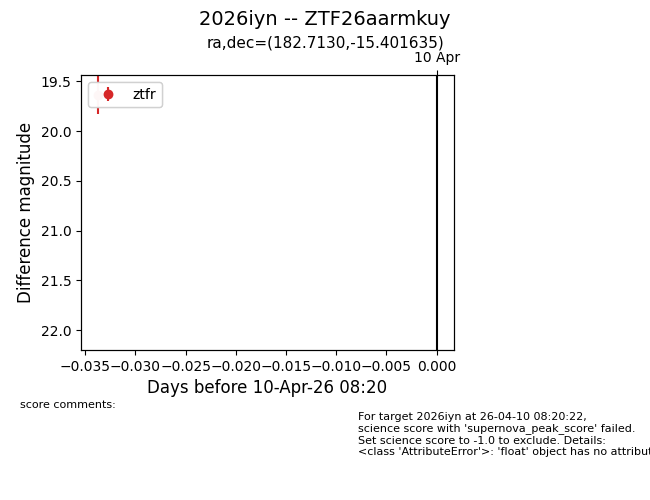
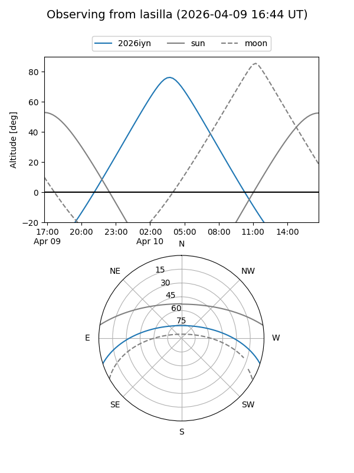
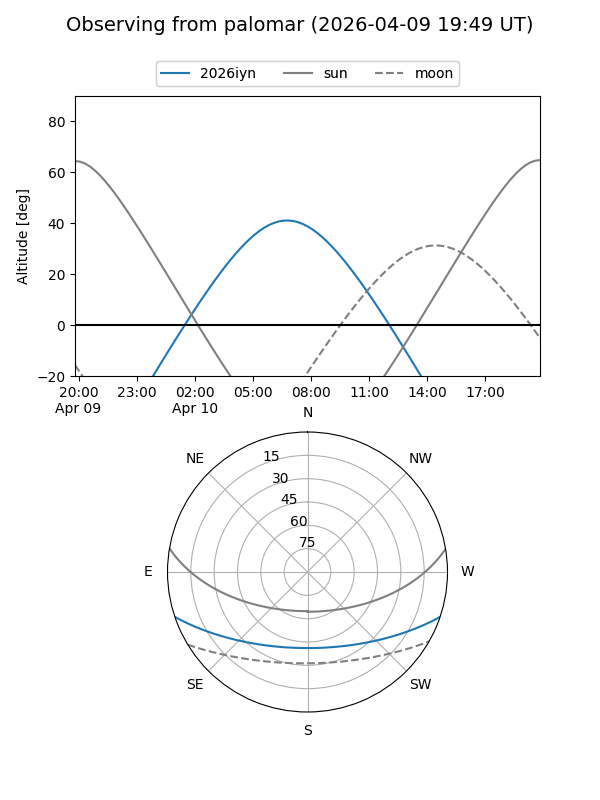
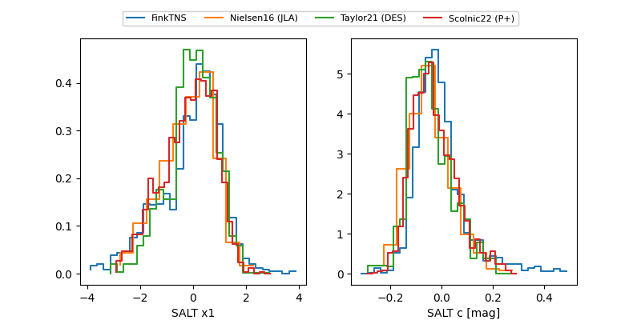

2026iyn
Target 2026iyn at 2026-04-10 08:27
Aliases and brokers:
FINK: link
Lasair: link
ALeRCE: link
TNS: link
YSE: link
alt names
ZTF26aarmkuy (ztf,fink_ztf)
2026iyn (tns,yse)
Coordinates:
equatorial (ra, dec) = 182.7130,-15.40163
equatorial (HMS+DMS) = 12:10:51.13,-15:24:05.89
galactic (l, b) = (288.6893,+46.34470)
Flags:
Photometry:
last ztfr=19.64
1 ztfr detections
Lightcurve

Visibility


Additional plots
